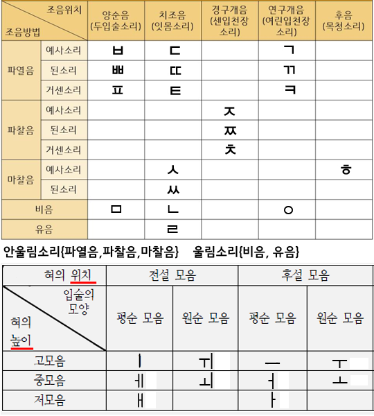

[ios_korean_ver:2.56] (appStore에 업데이트 대기중) [기본암기장] 업데이트 ∙奢侈 嗚咽 등 문제에 등록되었지만 암기장에 빠진 {한자}를 추가 .EBS 등의 자료를 참고하여 한자어를 추가 .한자 아닌 어휘가 한자로 구분되는 버그 수정 [설정] .{암기장 퀴즈}에서 {이미 봤던 단어}와 {새로운 단어}의 비율을 설정가능하게 함 .광고가 너무 불편하신 분들을 위한 [광고제거]인앱구매를 넣으려 했지만 계속 에러가 나서 업데이트에 포함하지 못함ㅠㅠ [ios_korean_ver:2.55] .해설 중에 자음모음표가 나오지 않는 버그가 있어요ㅠㅠ (빨리 수정해서 업데이트할게용)  [해설 수정.추가] 경1.19 :{회계년도(X)->회계연도}관련 해설 추가 --- [ox문제] .쪼끔 추가 ---- [기본암기장] 업데이트 ∙{한자, 고사성어}를 추가 ∙사자성어만 보기를 추가 (더보기->사자성어만 보기 선택) 2020년 공무원 시험일정 - 국가직 7급: 9월 26일(접수:8.6~8.9) - 지방직 7급: 10월 17일